Último run
Cargando...
Plataforma de análisis cuantitativo
Una experiencia visual limpia y ejecutiva para monitorear datos, modelos y resultados operativos en un solo tablero.
Estado operativo
Cargando...
Cargando...
Cargando...
Cargando...
3.11
Stack estable para producción.
Diario
Descarga y actualización automatizada.
ML + TS
Combinación de modelos estadísticos y de aprendizaje.
24/7
Ejecución continua por GitHub Actions.
Monitoreo visual
Las gráficas se construyen desde el módulo visualization y permiten interpretar tendencias de precios y variables clave del modelo con una presentación ejecutiva.
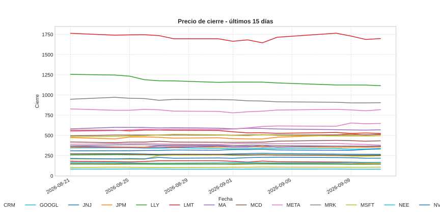
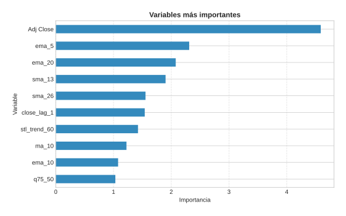
Model performance
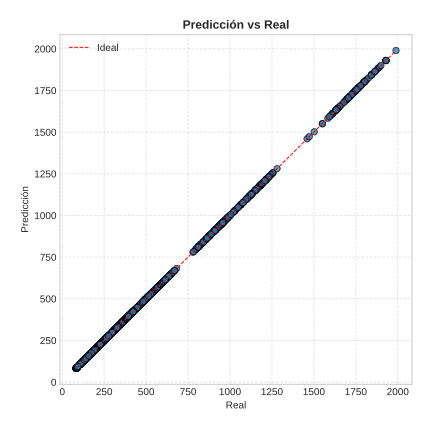
Trading actions
Para reducir saturación en portada, aquí se muestra solo el resumen de estrategias. Las recomendaciones por ticker y el diagnóstico completo se movieron a la pestaña Diagnóstico visual.
| Estrategia | Equity final | Retorno % | Win rate % | Max drawdown | Presupuesto | Posición máx % | Trade mín USD | Holding días |
|---|---|---|---|---|---|---|---|---|
| Cargando datos... | ||||||||
Data quality
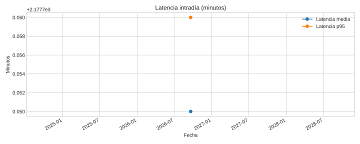
Advanced analytics
Esta vista concentra el detalle operativo para no sobrecargar la portada.
Todas las gráficas usan una ventana temporal fija de 120 días (cargando rango...) para mantener comparabilidad ejecutiva y reflejar la última ejecución disponible.
Usa el selector para revisar una visualización a la vez.
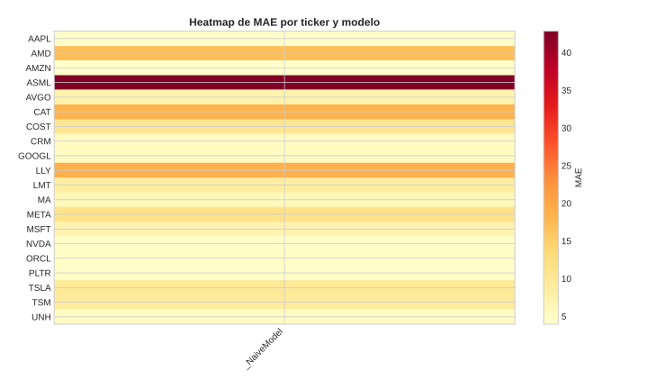
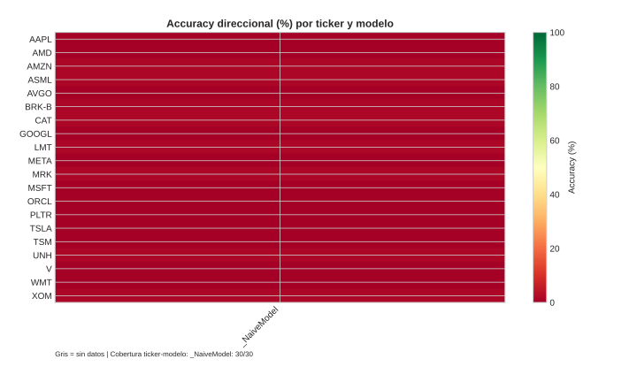
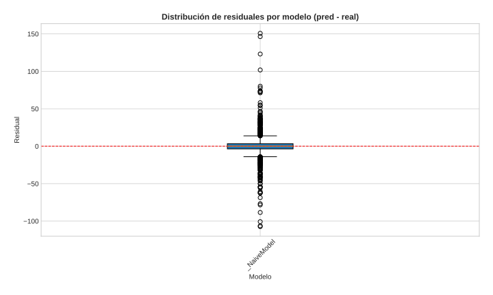
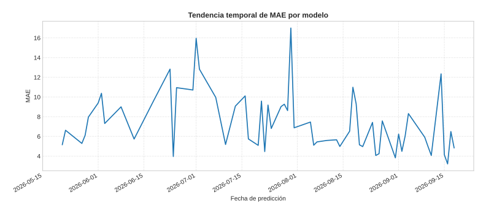
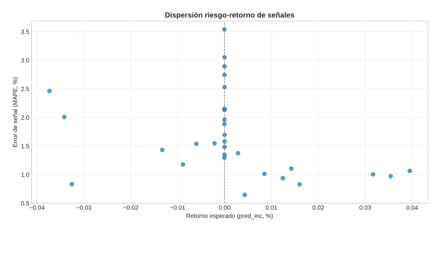
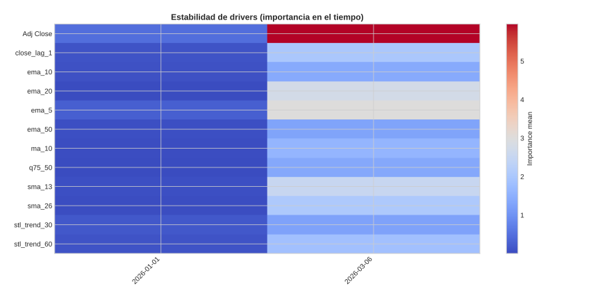
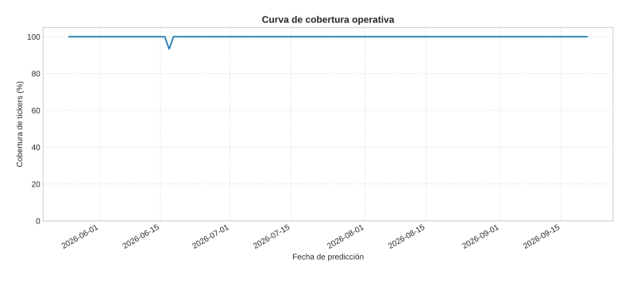
Trading actions
En esta vista se habilitan filtros y ordenamiento para revisar recomendaciones sin saturar la portada principal.
| Fecha | Ticker | Score | Acción | Resultado 1d | Resultado 5d | Resultado 20d | Calidad 5d | Predicciones por modelo |
|---|---|---|---|---|---|---|---|---|
| Cargando datos... | ||||||||
Operations
Concentra señales de robustez para validar que el sistema se mantiene utilizable en producción: estabilidad de cobertura, continuidad de scoreo y capacidad de respuesta ante cambios de régimen.
Úsala para priorizar investigación cuando observes quiebres simultáneos entre cobertura, error y consistencia de drivers.
Investment strategies
Esta pestaña concentra el rendimiento histórico de las estrategias para facilitar comparaciones directas por retorno, win rate y drawdown.
| Estrategia | Equity final | Retorno % | Win rate % | Max drawdown | Presupuesto | Posición máx % | Trade mín USD | Holding días |
|---|---|---|---|---|---|---|---|---|
| Cargando datos... | ||||||||
Run report
Este reporte resume estado técnico, trazabilidad de artefactos, calidad de señales y ranking de modelos de la ejecución más reciente.
Cargando...
Cargando...
Cargando...
Cargando...
| Cargando datos... |
| Modelo | Tickers | Filas |
|---|---|---|
| Cargando datos... | ||
| Ticker | Acción | Score | Ret 1d | Ret 5d | Ret 20d | Resultado 5d |
|---|---|---|---|---|---|---|
| Cargando datos... | ||||||
Guía rápida: MAE y RMSE miden error absoluto/cuadrático (menor es mejor), MAPE es el error porcentual medio (menor es mejor) y R2 mide capacidad explicativa (más cercano a 1 es mejor).
| Modelo | MAE | RMSE | MAPE | R2 |
|---|---|---|---|---|
| Cargando datos... | ||||
Arquitectura de solución
Adquisición de datos financieros y estandarización para asegurar calidad analítica.
Creación de señales, selección de atributos y control de consistencia estadística.
Modelos de forecasting con métricas comparables y trazabilidad histórica.
Generación de resultados y comunicación automática para equipos de negocio.